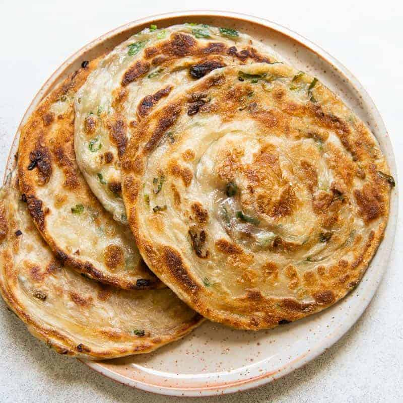

Scallion Pancakes
Source: Taken from
here

Making for a perfect midday snack, the scallion pancake's flaky savory
profile is both tasty and filling.
Description
Scallion pancakes are savory and flaky, perfect for breakfast as well as a
nice pairing for a variety of lunch and dinner dishes. Its versatitlity
makes it both a choice on-the-goal snack, and contributes to its
popularity in Chinese cuisine.
Ingredients
Pancakes
- 2 cups all-purpose flour, plus extra for dusting work surface
- 1 cup boiling water
- Up to 1/4 cup toasted sesame seed oil
- 2 cups thinly sliced scallions
Dipping Sauce
- 2 tablespoons soy sauce
- 2 tablespoons Chinkiang or rice wine vinegar
- 1 tablespoon finely sliced scallion greens
- 1/2 teaspoon grated fresh ginger
- 2 teaspoons sugar
Cooking
- 1/4 cup vegetable oil
- Kosher salt
Directions
-
Place flour in bowl of food processor. With processor running, slowly
drizzle in about 3/4 of the boiling water. Process for 15 seconds. If
dough does not come together and ride around the blade, drizzle in more
water a tablespoon at a time until it just comes together.
(Alternatively, in a large bowl add flour and 3/4 of the boiling water.
Stir with a wooden spoon or chopsticks until dough comes together,
adding water a tablespoon at a time as needed.) Transfer to a floured
work surface and knead a few times to form a smooth ball. Transfer to a
bowl, cover with a damp towel or plastic wrap, and allow to rest for 30
minutes at room temperature, or up to overnight in the fridge.
-
Divide dough into four even pieces and shape each into a smooth ball.
Working one ball at a time, roll out into a disk roughly 8-inches in
diameter on a lightly floured surface. Using a pastry brush, paint a
very thin layer of sesame oil over the top of the disk. Roll disk up
like a jelly roll, then twist roll into a tight spiral, tucking the end
underneath. Flatten gently with your hand, then re-roll into an 8-inch
disk.
-
Paint with another layer of sesame oil, sprinkle with 1/2 cup scallions,
and roll up like a jelly roll again. Twist into a spiral, flatten
gently, and re-roll into a 7-inch disk. Repeat steps two and three with
remaining dough balls.
-
In a small bowl, whisk together sauce ingredients and set aside at room
temperature.
-
Heat oil in an 8-inch nonstick, carbon steel, or cast-iron pan over
medium-high heat until shimmering. Carefully slip pancake into hot oil.
Cook, shaking pan gently, until first side is an even golden brown
(about 2 minutes). Carefully flip with tongs (be careful not to splash
the oil), and continue to cook, shaking pan gently, until second side is
an even golden brown (about 2 minutes longer). Transfer to a paper
towel-lined plate to drain. Season with salt and cut into 6 wedges.
Repeat with remaining 3 pancakes. Serve immediately with dipping sauce.
Back to menu